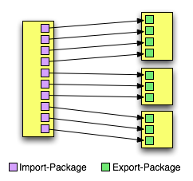
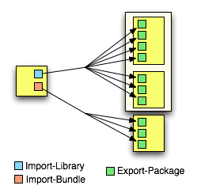

Complex enterprise frameworks such a Spring and Hibernate are typically divided into many, many different packages. Traditionally, if an OSGi bundle wished to make extensive use of such a framework its manifest would have to import a huge number of different packages. This can be an error-prone and tedious process. Furthermore, application developers are used to thinking in terms of their application using a framework, such as Spring, as a whole, rather than a long list of all the different packages that comprise the framework.
The following figure provides a simple illustration of the complexity of only using Import-Package:

Virgo reduces the need for long lists of imported packages by introducing two new manifest
headers; Import-Bundle and Import-Library. The following figure provides an
illustration of the simplification that these new headers offer:

As you can see, use of Import-Bundle and Import-Library can lead to a dramatic reduction
in the number of imports that you need to include in an application bundle’s manifest. Furthermore, Import-Bundle
and Import-Library are simply aliases for Import-Package; at deployment time Import-Bundle
and Import-Library header entries are automatically expanded into numerous Import-Package entries. This
means that you retain the exact same semantics of using Import-Package, without having to go through the labourious
process of doing so.
A bundle in an application can declare a dependency on a library by using the
Virgo Server specific Import-Library header. This header specifies a
comma-separated list of library symbolic names and version ranges that determine which libraries
are imported. By default a dependency on a library is mandatory but this can be
controlled through use of the resolution directive in exactly the same way as
it can with Import-Package.
Import-Library: org.springframework.spring;version="[2.5.4, 3.0)",
org.aspectj;version="[1.6.0,1.6.0]";resolution:="optional"
This example Import-Library header declares a mandatory dependency on the Spring
library at a version from 2.5.4 inclusive to 3.0 exclusive. It also declares an
optional dependency on the AspectJ library at exactly 1.6.0.
A bundle in an application can declare a dependency on a bundle by using the
Virgo Server specific Import-Bundle header. The header specifies a comma-separated
list of bundle symbolic names, version ranges, and scope declarmations that determine which bundles are imported and the scope of their dependency. By default a dependency
on a bundle is mandatory but this can be controlled through use of the resolution directive in exactly
the same way as it can with Import-Package.
Import-Bundle: com.springsource.org.apache.commons.dbcp;version="[1.2.2.osgi, 1.2.2.osgi]"
This example Import-Bundle header declares a mandatory dependency on the Apache Commons
DBCP bundle at exactly 1.2.2.osgi.
When working with a scoped application, such as a PAR file or a plan, you might run into a situation where one of the bundles in the application (call it bundleA) depends on another bundle (bundleB) that performs a runtime task (such as class generation) that a third bundle (bundleC) might need to know about, although bundleC does not explicitly depend on bundleB.
For example, Hibernate uses CGLIB (code generation library) at runtime to generate proxies for persistent classes. Assume that a domain bundle in your application uses Hibernate for its persistent objects, and thus its Import-Bundle manifest header includes the Hibernate bundle. Further assume that a separate Web bundle uses reflection in its data-binding code, and thus needs to reflect on the persistent classes generated by Hibernate at runtime. The Web bundle now has an indirect dependency on the Hibernate bundle because of these dynamically generated classes, although the Web bundle does not typically care about the details of how these classes are persisted. One way to solve this dependency problem is to explicitly add the Hibernate bundle to the Import-Bundle header of the Web bundle; however, this type of explicit-specified dependency breaks the modularity of the application and is not a programming best practice.
A better way to solve this problem is to specify that Virgo itself dynamically import
the bundle (Hibernate in the example above) to all bundles in the application at runtime.
You do this by adding the import-scope:=application directive to the Import-Bundle header
of the bundle that has the direct dependency (the domain bundle in our example). At runtime, although the Web bundle
does not explicitly import the Hibernate bundle, Virgo implicitly imports it and thus its classes are available
to the Web bundle. This mechanism allows you to declare the dependencies you need to make your application run,
without having to make changes to your application that might limit its flexibility.
The following example shows how to use the import-scope directive with the Import-Bundle header:
Import-Bundle: com.springsource.org.hibernate;version="[3.2.6.ga,3.2.6.ga]";import-scope:=application
You can also set the import-scope directive to the (default) value bundle; in this case, the scope of the bundle is just the bundle itself and thus Virgo does not perform any implicit importing into other bundles of the application.
Note that use of the import-scope:=application directive of the Import-Bundle header only makes sense when the bundle is part of a scoped application (PAR or plan); if the bundle is not part of a scoped application, then this directive has no effect.
Finally, because import-scope:=application implicitly adds a bundle import to each bundle of the PAR or plan, the impact of subsequently refreshing the imported bundle is, in general, broader than it would have been if you had not used import-scope:=application. This may well affect the performance of refresh.
Libraries are defined in a simple text file, typically with a .libd suffix. This file identifies the
library and lists all of its constituent bundles. For example, the following is the library definition for
Spring 2.5.4:
Library-SymbolicName: org.springframework.spring Library-Version: 2.5.4 Library-Name: Spring Framework Import-Bundle: org.springframework.core;version="[2.5.4,2.5.5)", org.springframework.beans;version="[2.5.4,2.5.5)", org.springframework.context;version="[2.5.4,2.5.5)", org.springframework.aop;version="[2.5.4,2.5.5)", org.springframework.web;version="[2.5.4,2.5.5)", org.springframework.web.servlet;version="[2.5.4,2.5.5)", org.springframework.jdbc;version="[2.5.4,2.5.5)", org.springframework.orm;version="[2.5.4,2.5.5)", org.springframework.transaction;version="[2.5.4,2.5.5)", org.springframework.context.support;version="[2.5.4,2.5.5)", org.springframework.aspects;version="[2.5.4,2.5.5)", com.springsource.org.aopalliance;version="1.0"
The following table lists all of the headers that may be used in a library definition:
Table 4.4. Library definition headers
| Header | Description |
|---|---|
| Library-SymbolicName | Identifier for the library |
| Library-Version | Version number for the library |
| Import-Bundle | A comma separated list of bundle symbolic names.
Each entry may optionally specify a version (using the version= directive)
and the scope of the import (using the import-scope directive). |
| Library-Name | Optional. The human-readable name of the library |
| Library-Description | Optional. A human-readable description of the library |
Rather than encouraging the packaging of all an application’s dependencies within the application itself, Virgo uses a local provisioning repository of bundles and libraries upon which an application can depend. When the Virgo encounters an application with a particular dependency, it will automatically provide, from its provisioning repository, the appropriate bundle or library.
Making a dependency available for provisioning is simply a matter of copying it to the appropriate location in the
Virgo’s local provisioning repository. By default this is
SERVER_HOME/repository/usr. A more detailed discussion of the provisioning
repository can be found in the User Guide.